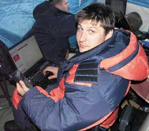

В интервью редактору раздела аппаратных средств Александру Николову директор по развитию корпоративных проектов московского представительства корпорации Intel Николай Местер рассказал о текущем положении дел, основных тенденциях и общих перспективах развития платформы Intel Itanium 2 и сформировавшейся вокруг нее экосистемы.
"BYTE/Россия": В начале 2006 г. Intel объявила о долгосрочных инвестиционных планах, касающихся платформы Intel Itanium 2: в ближайшие годы в развитие направления бизнес-критичных систем самой корпорацией и партнерами будет вложено порядка 10 млрд долл. Не могли бы Вы пояснить, на какие цели и в каких пропорциях пойдут эти деньги?
Николай Местер: Начнем с того, что в конце 2005 г. был сформирован Альянс разработчиков решений на базе архитектуры Intel Itanium (Itanium Solutions Alliance, ISA), в который вошли все крупнейшие производители систем на платформе Intel Itanium 2. Те 10 млрд долл., о которых вы упомянули, как раз и будут инвестированы в рамках деятельности этого альянса. В первую очередь эти ресурсы пойдут на продвижение платформы Intel Itanium 2: на взаимодействие с разработчиками ПО и теми компаниями, которые переносят свои решения на нашу платформу, на совместные маркетинговые программы, на работу с конечными потребителями, прежде всего с крупными корпоративными заказчиками. Особо стоит отметить, что эти средства не предполагается использовать на научно-исследовательские разработки в рамках развития платформы Intel Itanium 2 - все до последнего цента пойдет именно на озвученные цели.
"BYTE/Россия": Хотелось бы узнать, хотя бы в общих чертах, как устроен альянс ISA, какими полномочиями он обладает, каким образом формируется - в частности, могут ли российские компании вступить в него и на каких условиях, какие реальные цели он ставит перед собой?
Н. М.: К сожалению, я не могу подробно ответить на эти вопросы - дело в том, что альянс представляет собой совершенно отдельное, независимое юридическое лицо, и, согласно корпоративным правилам, Intel не может комментировать его деятельность и рассказывать что-либо от его имени. Однако читатели могут отыскать на сайте альянса http://www.itaniumsolutionsalliance.org подробные ответы на подавляющее большинство интересующих их вопросов, в том числе о его участниках, формах и способах членства, целях, задачах и планах альянса.
|  |
Николай МестерВ 1994 г. закончил Московский авиационный институт по специальности инженер-системотехник. Два года работал в компании Digital Equipment Corporation в подразделении разработки ПО, начав в качестве программиста и закончив в должности руководителя команды разработчиков ПО. Затем г-н Местер перешел в компанию "Банковский производственный центр", где два года руководил проектами, связанными с автоматизацией банковского бизнеса. Покинув компанию, год проработал в компании "АйТи" на посту менеджера по продаже и продвижению систем банковской автоматизации. Следующие два года в качестве заместителя генерального директора компании "Смарт-КардСервис" занимался автоматизацией банковского бизнеса. Последние пять лет Николай Местер работает в московском представительстве компании Intel на должности директора по развитию корпоративных проектов. Занимается направлением "Финансы и НРС". |
"BYTE/Россия": За свою историю платформа Intel Itanium 2 претерпела несколько серьезных репозиционирований. На первом этапе решения на базе архитектуры EPIC подавались как полная замена систем х86. Затем пришел черед тезиса о том, что Intel Itanium 2 - это высокопроизводительное решение для серверов и рабочих станций среднего и высшего уровня. В последнее время фокус интереса вендоров явно сместился в сторону тяжелых и сверхтяжелых решений, да и сама Intel предпочитает сравнивать Intel Itanium 2 с высокопроизводительными RISC-платформами POWER и SPARC. Не могли бы Вы более четко обозначить точку зрения корпорации на сегодняшнюю и будущую стратегии продвижения платформы Intel Itanium 2?
Н. М.: Реально первый Itanium появился на рынке в 2001 г., и с этого момента здесь, в России, мы начали активную работу по развитию и продвижению этой технологии. Исторически сложилось так, что я участвовал в ней с самых первых дней и все, что происходило у нас, происходило на моих глазах. Говоря о применимости технологии Intel Itanium 2 и ее направленности, по крайней мере, в той части, что касается России, я предпочитаю опираться на этот опыт и свое видение ситуации, избегая комментировать слухи, большей частью далекие от реальности.
Изначально Itanium был для корпорации совершенно новым продуктом, и компания позиционировала его в новый, не освоенный еще сегмент - сегмент тяжелых серверных решений, выходящих за рамки восьмипроцессорных комплексов. Речь идет о чрезвычайно важных для бизнеса системах, исполняющих задачи уровня mission critical, где даже небольшая остановка представляет собой весьма серьезную проблему для бизнеса, а более длительный простой может привести к полному краху компании. По сравнению с существовавшими ранее на рынке решениями - мэйнфреймами и RISC-серверами - новое решение Intel обеспечило заказчикам целый ряд существенных преимуществ: более низкая цена, повышенный уровень надежности, поддержка открытых стандартов, возможность безболезненной смены поставщика аппаратной части и многое другое.
Одно из важнейших направлений в секторе систем mission critical, где, на наш взгляд, позиции Intel Itanium 2 весьма сильны, - это задачи, требующие высокой скорости работы с большими объемами данных, например, задачи транзакционного класса, работающие с большими и сверхбольшими базами данных. На жаргоне такие системы иногда называют "молотилками", поскольку от них требуется постоянная обработка ("перемалывание") больших объемов данных. Задачи подобного рода связаны с обеспечением быстрого доступа к базам данных, содержащим сотни тысяч и миллионы записей, и часто встречаются в системах заказа авиабилетов, банковских системах, биллинговых системах телеком-операторов, обслуживающих множество клиентов в режиме постоянного доступа (online).
Следующая важнейшая составляющая этого сектора - задачи анализа данных, характеризуемые большими объемами хранимых данных и достаточно сложными многокритериальными аналитическими запросами-выборками, - также хорошо освоена Intel Itanium 2.
Наконец, еще один класс систем, на который Intel активно ориентирует Intel Itanium 2, представляет собой серверы приложений business intelligence - специализированные хранилища данных (data mart), системы искусственного интеллекта, системы предобработки данных, выполняющие сложную интеллектуальную обработку больших объемов данных. В отличие от первых двух, составляющих, условно говоря, back-end ИТ-инфраструктуры компании, эти системы относятся к промежуточному уровню, но также входят в сектор систем mission critical.
Еще одна область, где платформа Intel Itanium 2 проявляет себя с самой лучшей стороны, - серьезные вычислительные задачи как научного, так и промышленного характера. Дело в том, что в архитектуре Intel Itanium 2 имеется очень мощная составная часть, отвечающая за операции с вещественными числами. Одно из наиболее значимых ее преимуществ по сравнению, например, с наиболее распространенной индустриально стандартной архитектурой х86, - повышенная точность вычислений, благодаря чему ученые и инженеры могут проводить расчеты более эффективно, правильно и точно. Второе существенное преимущество архитектуры Intel Itanium 2 для научных вычислений состоит в том, что множество специализированных ресурсов внутри процессора позволяет, во-первых, реализовать максимально эффективную параллельную обработку информации (за один такт процессора одновременно выполняется до шести инструкций или до четырех вещественных), во-вторых, обеспечить максимально быстрый доступ к обрабатываемым данным, прежде всего за счет большого количества процессорных регистров.
Это основные, наиболее существенные и значимые сферы применения систем на базе архитектуры Itanium, заложенные в планы развития и продвижения платформы еще на стадии проектирования. В целом же можно сказать, что Intel Itanium 2 прекрасно подходит для решения всего спектра задач, ориентированных на системную архитектуру SMP с единой общей памятью и множеством процессоров с одновременным доступом к ней. На текущий момент мы имеем уникальное решение, позволяющее масштабировать SMP-системы до 512 процессорных ядер в рамках единой инсталляции. С появлением двухъядерного процессора Montecito масштабируемость увеличится вдвое - до 1024 ядер.
Что же касается противостояния Intel Itanium 2 и х86 или замены одной платформы на другую, то это совершенно надуманные утверждения - корпорация Intel не стремится и никогда не стремилась продвигать одну платформу в ущерб другой, поскольку мы отлично понимаем, что у каждой из них своя особая ниша, в которой наилучшим образом раскрываются возможности платформы при сохранении оптимального для заказчиков соотношения цена/производительность. Надо отметить, что в настоящее время для платформы Intel Itanium 2 практически завершился этап завышенных ожиданий - теперь большинство партнеров и заказчиков смотрят на вещи гораздо реальнее и имеют вполне сбалансированное представление о том, где и почему хорош Intel Itanium 2, а где и почему - х86. Жизнь сама расставила акценты, и в этом нет никакой ошибки предвидения, а есть постепенное и выверенное движение от первоначальной теоретической задумки к ее целостному практическому воплощению. Хотя, конечно, не стоит забывать, что совершенно четких границ, разделяющих сферы применения архитектур Intel Itanium 2 и х86, на самом деле не существует - всегда имеет место некоторая диффузия решений, возможность реализации одних и тех же задач на обеих платформах, связанная с особенностями ПО, удобством использования тех или иных решений, доступностью квалифицированных специалистов, наличием соответствующих знаний, возможностями заказчика, ценой конечных решений, необходимым уровнем надежности и т. п. По сути, это целый комплекс вопросов, на которые заказчики при реализации проекта должны для себя ответить, прежде чем отдать предпочтение той или иной платформе.
"BYTE/Россия": Отрадно отметить, что среди российских производителей вычислительной техники все крупные и серьезные игроки в той или иной степени связаны с платформой Intel Itanium 2. Расскажите, пожалуйста, как будет развиваться дальнейшее сотрудничество с российскими вендорами.
Н. М.: Вопрос непростой - он прежде всего должен быть адресован нашим локальным партнерам, а говорить за них, как вы понимаете, я не могу. Но я попытаюсь рассказать о том, как нам видятся возможности применения наших технологий российскими партнерами. Мы видим большой потенциал применения технологий Intel Itanium 2 в продуктах наших локальных партнеров - в России был, есть и будет сегмент рынка, который никогда и ни при каких условиях не будет покрыт транснациональными компаниями, такими, как IBM, HP или Dell. Прежде всего это органы государственного управления, в особенности военное ведомство, органы правопорядка и различные спецслужбы, которые по соображения безопасности и секретности часто приобретают технику именно российских компаний. Кроме того, существует слой заказчиков, нуждающихся в решениях более масштабируемых, чем способна обеспечить архитектура х86, но по каким-либо причинам не готовых приобретать решения, предлагаемые мультинациональными производителями. Однако тут нужно совершенно четко понимать, что платформа, предлагаемая именно Intel на текущий момент, ограничена сверху четырьмя процессорными ядрами, а с выходом Montecito этот порог поднимется до восьми ядер на систему. Такое ограничение очень жестко задает верхнюю планку для аппаратных решений партнеров и тем самым очерчивает круг задач, для которых они применимы. Но вместе с тем эта планка четко соответствует требованиям бизнеса, приобретающего подобные решения, поскольку в таких случаях на передний план выходят скорее чисто психологические аспекты, никак с технологиями не соотносящиеся, но связанные с гарантиями защищенности, надежности, сервиса и т. д. В этих нишах наши локальные партнеры играют очень хорошо.
В настоящее время у нас существует сеть авторизованных партнеров из шести компаний: Arbyte Computers, "Аквариус", Kraftway, "К-Системс", R-Style и компания АСК из Екатеринбурга. По сравнению с партнерской сетью в секторе индустриально стандартной архитектуры х86 это не слишком много, но специфика архитектуры Intel Itanium 2 такова, что вхождение на рынок требует от партнера достаточно серьезных усилий и затрат, прежде всего на подготовку специалистов соответствующего уровня. Однако доступ к технологии открыт, и никому заранее не отказано в сотрудничестве. Просто, как обычно и бывает, рынок расставил все по местам - кому-то интересно заниматься этим направлением, он чувствует, что дорос до нужного уровня, имеет необходимый потенциал и желание, а кому-то нет - и он живет в своей нише.
"BYTE/Россия": Давайте посмотрим на сотрудничество с локальными партнерами с другой стороны - что бы Вы могли сказать о взаимодействии с российскими разработчиками ПО?
Н. М.: Ключевым аспектом при продвижении технологии Itanium на локальном российском рынке было признано взаимодействие с отечественными разработчиками - еще в 2001 г. мы абсолютно четко поняли, что, не имея адаптированных под Itanium программных решений, мы не имеем шансов на успех. Лишь наличие постоянного массового сообщества разработчиков, причем не только и не столько зарубежных, а именно российских, позволило нам закрепиться на этом рынке и достичь весьма существенных результатов. Ведь, как известно, любой новый продукт, существенным образом отличающийся от всего того, что было на рынке прежде, при запуске и продвижении требует инициации большого количества партнерских связей в сопредельных с ним областях. В терминологии Intel эти связи, а также соответствующие им локальные компании и есть экосистема, в данном случае экосистема платформы Itanium.
С точки зрения принципов, подходов и способов работы с экосистемой, пожалуй, не будет преувеличением сказать, что Intel занимает уникальное место на рынке: ни одна компания не работает с экосистемой так плотно и так эффективно - за достаточно небольшой срок, с 2001 г., на платформу Intel Itanium 2 было перенесено более 7500 приложений для различных задач, различных типов заказчиков и различных сегментов рынка. Чтобы лучше понять масштабы усилий корпорации, приведу один пример: в центре компетенции по решениям на базе Itanium, созданном совместно с компаниями НР и "Ай-Теко" в конце 2002 г., за все время его существования на новую платформу было перенесено 25 различных приложений масштаба предприятия - это и биллинговые системы, и банковские приложения, и системы, связанные с документооборотом, ERP-системы и т. д. Стоит отметить, что даже простейший перенос, без перекомпиляции исходного кода (в тех случаях, когда это возможно - например, в системе Oracle) на новой платформе, требует от месяца до полутора-двух. Полагаю, теперь несложно представить себе общий объем проделанной работы - 25 приложений за несколько лет в одном центре при 7500 по всему миру примерно в те же сроки.
Однако даже проделанная колоссальная работа отнюдь не позволяет нам почивать на лаврах - Intel активно пестует сообщество, расширяет и развивает его, привлекая все новых и новых партнеров. В рамках подобных инициатив корпорация проводит различные программы более углубленного сотрудничества, в том числе предоставляет партнерам расширенный доступ к технологиям, с помощью которых предлагает развивать направление Intel Itanium 2 дальше, ведет совместные разработки в области ПО, включая инструменты разработки, организует различные форумы, в том числе Intel Developer Forum. Все наши усилия принципиально направлены на то, чтобы сообщество могло максимально эффективно и, насколько это возможно, безболезненно и легко адаптировать нашу архитектуру к особенностям своих задач и нуждам своего бизнеса. В качестве примера можно привести проект перевода биллинговой системы сотового оператора "Мегафон" с Unix-платформы PA-RISC на Intel Itanium 2, выполненный совместно с компаниями НР и "ПитерСервис". Кроме того, аналогичные проекты реализованы и в банковской сфере - несколько самых распространенных банковских систем, в том числе решения ЦФТ, "Диасофт", "Интерсофт" и R-Style, перенесены на платформу Intel Itanium 2, и сегодня у многих корпоративных заказчиков мы имеем инсталляции, насчитывающие сотни процессоров Intel Itanium 2.
Вообще же для работы с экосистемой внутри Intel существует особое подразделение Software and Solutions Group (SSG), в которое входят специалисты различной направленности: инженеры, отвечающие за аппаратное обеспечение, специалисты в области ПО и сотрудники, занимающиеся совместным маркетингом с компаниями, уже перешедшими на нашу платформу. В России действует одна из таких групп, отвечающая за локальный рынок и рынок Восточной Европы, и в рамках этого направления наши инженеры работают в том числе с такими компаниями, как Microsoft, SAP, MySQL и т. д. На локальном рынке корпоративных решений мы сейчас выделили приоритетный список, включающий 15-20 компаний, крупнейших как с точки зрения рынка, так и в плане охватываемых ими заказчиков. С ними ведется активная работа в области совместного маркетинга, технического сопровождения и прочих важных аспектов. Не забываем мы и про аудиторию, состоящую из компаний среднего масштаба.
"BYTE/Россия": В середине этого года ожидается знаковое для платформы Intel Itanium 2 событие - должен выйти в свет процессор нового поколения, известный под кодовым названием Montecito. Однако хотелось бы заглянуть и немного дальше в будущее. Расскажите, пожалуйста, какие инновации (многоядерность, средства оптимизации, технологии энергосбережения и т. д.) появятся в процессорах последующих поколений.
Н. М.: Первое, что хотелось бы отметить, - в области проектирования и производства процессоров в Intel уже достаточно давно возобладал тренд к максимальной интеграции всех компонентов в рамках одного кристалла. Вместе с тем совершенствуется и технологический процесс - Montecito будет первым процессором семейства Itanium, произведенным по 90-нм технологии, а в недалеком будущем планируется переход на технологию 65 нм.
В отличие от предыдущих лет, Intel придает меньше значения увеличению частоты процессора. Это, конечно, не значит, что тактовая частота со временем не будет увеличиваться, но процесс этот будет носить постепенный характер. Соответственно еще один тренд - движение к многоядерности, что соответствует общему настроению на микропроцессорном рынке. При этом внутри каждого ядра предполагается наращивать поддержку технологий многопоточного исполнения. Как известно, в Montecito будет два ядра, в Tukwila - четыре, далее мы пока не конкретизируем, говоря о многоядерности в целом. Кстати, поддержка нескольких ядер потребует перехода от применяемой сегодня шинной архитектуры коммутации компонентов системы к архитектуре соединений типа "точка-точка" на базе специализированного коммутатора. Правда, говорить об этом как об уже готовом к применению решении еще рано.
Очень важная проблема - энергоснабжение, особенно в крупных центрах обработки данных. Связана она с ростом как потребляемой информационными системами мощности, так и числа самих этих систем. Например, в Москве многие корпоративные клиенты уже столкнулись с тем, что на практике сложно найти место, куда можно было бы подвести сотни киловатт мощности, а потребности порядка ста киловатт на один ЦОД - это уже более чем реально. Когда количество серверов достигает сотен и даже тысяч единиц, проблемы подвода электричества и отвода излишнего тепла встают очень остро. И решение здесь лежит в двух плоскостях - необходимо не только снизить потребляемую мощность и тепловыделение компонентов, но и организовать максимально эффективное использование всей доступной электроэнергии. Такой подход несколько выходит за рамки процессорной архитектуры, он в большей степени связан с архитектурой платформы. Основную роль здесь играет концепция виртуализации ресурсов, позволяющая гораздо более эффективно утилизовать вычислительные мощности каждой имеющейся системы и сократить тем самым их общее число. Необходимо также упомянуть о повышении эффективности удаленного управления серверными системами, для чего предусмотрена технология iAMT.
Еще одно направление развития - увеличение объема кэш-памяти и повышение эффективности ее использования. При этом объем кэша - не самоцель, заказчикам будет предлагаться целый спектр процессоров с различным объемом кэш-памяти, каждый из которых наилучшим образом подходит для решения того или иного круга задач.
Следующий момент - развитие технологий, связанных с повышением надежности. Это и реализованная в Montecito технология Intel Cache Safe Technology (ранее известная как Pellston) для самовосстановления кэш-памяти и защиты ее от ошибок, и масса менее известных технологий, обеспечивающих надежность платформы в целом.
И наконец, последнее - унификация. Идея ее состоит в том, чтобы создать единую системную архитектуру, позволяющую применять в серверах как EPIC-процессоры Intel Itanium 2, так и х86-процессоры Xeon. Первая ее практическая реализация намечена на 2008 г., и хотя сейчас пока рано говорить о конечном продукте, направление движения уже задано.
"BYTE/Россия": Второй после процессора важнейший компонент платформы - набор системных микросхем. Расскажите подробнее о планах корпорации на этом направлении - какие НМС и когда будут выпущены, какие новые технологии и технические решения в них появятся?
Н. М.: Следующая серьезная модификация набора системных микросхем Intel по плану приурочена к появлению многоядерного процессора Tukwila - в определенной степени можно сказать, что это будет уже не совсем НМС в традиционном понимании, поскольку часть функций уйдет непосредственно в процессор, а коммутация между компонентами будет организована с использованием прямых соединений типа "точка-точка". Частичные изменения будут внесены в существующий набор в момент появления Montecito и Montvale, поскольку это необходимо для поддержки ряда реализованных в них технологий.
"BYTE/Россия": Одно время в прессе и в сообществе разработчиков достаточно активно обсуждалась возможность реализации на платформе Intel Itanium 2 технологии прямого аппаратного исполнения команд архитектуры х86. Насколько я помню, практическое ее воплощение ожидалось в процессоре Montecito, однако, по последним данным, этого не произойдет. Как сегодня обстоят дела с данным решением - появится ли оно в реальных продуктах или будет окончательно похоронено из-за более четкого разведения потребителей систем Intel Itanium 2 и х86 по соответствующим нишам?
Н. М.: В идеале лучше всего четко разнести задачи, требующие разных аппаратных архитектур, по разным независимым системам, реализующим эти архитектуры. Однако, как показывает практика, это не всегда возможно и целесообразно с экономической точки зрения. Нередко случается, что в сложных комплексах часть ПО уже переведена на архитектуру Intel Itanium 2, а часть по каким-либо причинам еще нет, но тем не менее заказчик хотел бы установить все ПО на одну систему. В этой ситуации очевидно, что Intel Itanium 2 должен поддерживать архитектуру х86, однако вопрос в том, как это реализовать. Изначально в Intel Itanium первого поколения была встроена часть процессора Pentium III, которая и отвечала за исполнение команд х86. Эффективность такого решения была достаточно далека от оптимальной, и на определенном этапе эволюции Intel Itanium 2 было принято решение реализовать вместо него специальный программный слой в ОС Windows и Linux, который бы воспринимал инструкции IA-32, преобразуя их в инструкции IA-64. Этот слой, получивший название IA-32 Execution Layer (IA-32 EL), в реальных продуктах впервые появился в 2004 г. Стоит особо отметить, что при разработке Montecito принято решение полностью перейти на использование программного слоя, а аппаратная составляющая из процессора удалена.
Вообще же это некое временное решение, позволяющее заказчикам исполнять 32-разрядные приложения поверх новой аппаратной платформы до тех пор, пока они не будут портированы на Intel Itanium 2 в полной мере. Идеи создать Intel Itanium 2, способный исполнять 32-разрядный код х86 так же эффективно и быстро, как и Xeon, у нас никогда не возникало.
"BYTE/Россия": Ключевая особенность базовой для Intel Itanium 2 архитектуры EPIC состоит в том, что производительность реальных вычислительных систем очень сильно зависит от правильной оптимизации программного кода. За прошедшее с момента появления первых процессоров Itanium время корпорация Intel сделала невероятно много в области разработки компиляторов и средств оптимизации, однако почивать на лаврах еще, пожалуй, рано. Расскажите, пожалуйста, о том, что делается сейчас и что будет сделано в ближайшем будущем в области создания и совершенствования профессионального инструментария для разработчиков.
Н. М.: С выходом Montecito должен обновиться до версии 9 и наш компилятор для языков C, C++, Fortran. Кроме того, Intel активно занимается развитием инструментов, нацеленных на повышение эффективности исполнения кода, - профилировщиков, оптимизаторов, наборов математических библиотек, библиотек, реализующих возможности кластеризации и распределенных GRID-вычислений. Стратегия заключается в том, чтобы выпускаемые Intel средства разработки позволяли максимально эффективно реализовать возможности наших аппаратных архитектур. Как показывает практика, при использовании компилятора Intel, например, по сравнению с GNU GCC, выигрыш может составлять от десятков процентов до нескольких раз даже на не слишком сложном исходном коде.
Однако ни один компилятор не заменит собой опытного разработчика - никакой инструмент не способен исправить ошибочный, плохо написанный код. Поэтому Intel очень много времени и сил уделяет взаимодействию с аудиторией разработчиков, начиная от проведения различных форумов, в том числе Intel Developer Forum, и заканчивая специализированной глобальной программой Intel Software Network, включающей множество справочных материалов и примеров правильного использования возможностей архитектуры Intel Itanium 2. Более того, наши специалисты работают в тесном контакте с разработчиками таких ведущих компаний, как Microsoft, Oracle, SAP, и многих других, помогая им повышать производительность компонентов, непосредственно взаимодействующих с аппаратурой. Благодаря этому многим заказчикам нет нужды беспокоиться об оптимизации - приобретая ПО этих компаний, они получают уже хорошо отлаженные и оптимизированные для Intel-архитектуры средства решения своих задач.